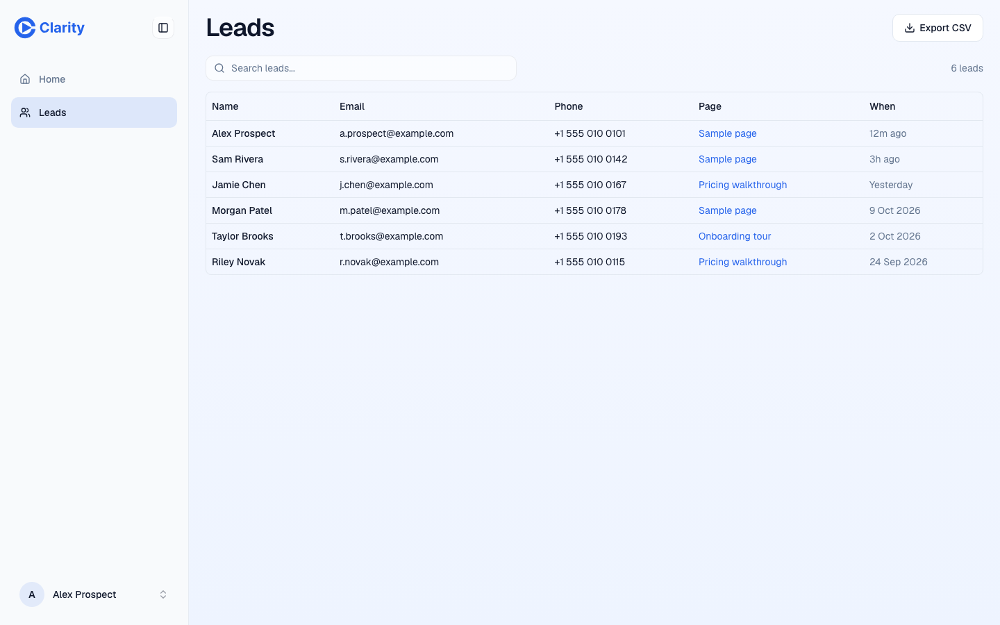
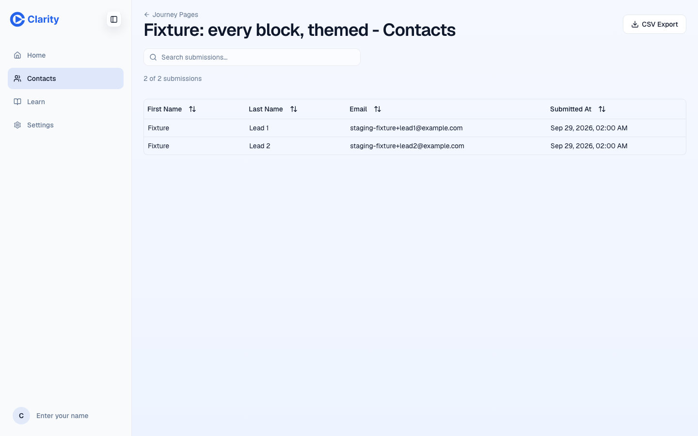
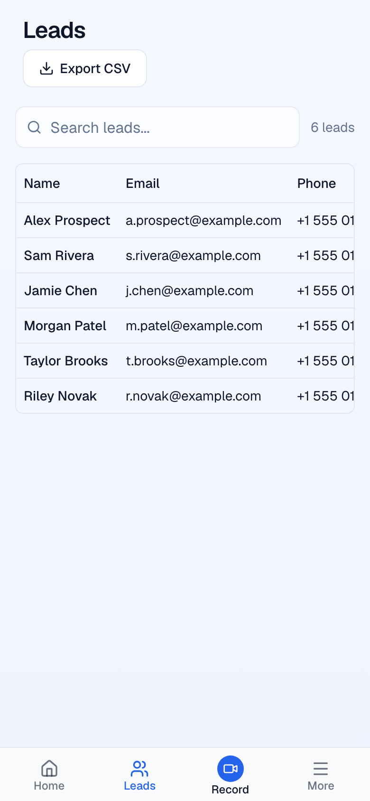
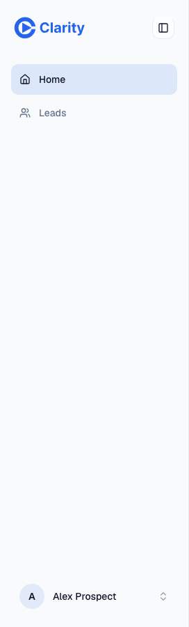
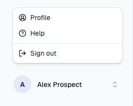

Leads instead of Contacts; Learn becomes Help
Main navigation, Contacts route, Learn route, account menu, phone tab bar.
The nav becomes Home and Leads. Leads lists form submissions newest first with Name, Email, Phone, Page and When, plus search and Export CSV. The 1,769 existing contacts stay readable behind a quiet "Older contacts" link on the same route, read-only with export; Add contact, Import CSV, Department and Industry go. Learn becomes "Help" in the account menu, and the account menu gains "Settings" (it is the only way in once Contacts and Learn leave the nav). The phone bar drops to Home, Leads, Record, More.
Storage does not change: submissions already upsert into the contacts table (lead-capture-contact.ts), which the GoHighLevel sync reads, so the sync keeps working.
The problem
Contacts is a small CRM (Department, Industry, Import CSV, Add contact) that never shows which page a lead came from. In 90 days customers created 6 contacts by hand and 4 arrived from forms; no CSV, Google or Salesforce contact has arrived in 90 days. Learn is nine static videos holding a slot in the main nav and one of five phone tabs.
What it would look like
Before, a CRM table. After, a leads list that answers "who filled in which page, when".












What the data says
Customer contacts (1,769 live rows, 199 owners)
| Source | Rows | Created last 90 days |
|---|---|---|
| (none) | 919 | 0 |
| 234 | 0 | |
| imported | 192 | 0 |
| clarity (by hand) | 189 | 6 |
| SalesForce | 110 | 0 |
| csv | 104 | 0 |
| microsoft | 17 | 0 |
| journey_page_form | 4 | 4 |
Per owner: median 2, p90 18, max 179. Department filled on 24 rows, industry on 240, organization on 320.
Form submissions (journey_page_submissions)
| Set | Rows | Pages | Owners |
|---|---|---|---|
| Customer, all time | 202 | 22 | 20 |
| Customer, last 90 days | 18 | 4 | 4 |
| All accounts, last 90 days | 176 | 8 | 7 |
158 of the 176 recent submissions are internal test traffic. Submissions became contacts only from 2026-07-26 (4 rows); older ones were never backfilled, so the Leads page must read submissions, not contacts.
Code facts: CSV import is browser-only, one POST per row with source: "csv" (ContactsIndexRoute.tsx:472, 651); the API has no import route. GoHighLevel sync: 57 rows, 23 customers, none failed.
Options
Answers the question a rep has, drops the CRM fields nobody fills, keeps every row readable and exportable, and keeps the sync.
Two lists with two schemas on one route. The CRM tab would be for 6 hand-made contacts a quarter.
The page card badge already does this. Reps with several pages need one list.
Questions for William
Recommended: Yes.
Recommended: Yes. 10 contacts were created in 90 days; export covers the 199 owners who have rows.
Recommended: Yes. U16 flattens Learn's tabs tonight; this moves it. Settings needs a home once the nav is Home and Leads.
PRs once decided
New /leads reading submissions joined to pages (owner-scoped API), search, CSV export, relative "When". Nav item and phone tab swap. The page card badge links here with a page filter. Evidence: desktop and phone, a page filter, export.
Contacts route becomes the read-only list with export, reachable from Leads. Delete create, edit, import UI and their API routes if nothing else calls them (the GoHighLevel sync reads the table, not the API).
Learn leaves the sidebar and MobileNav; "Help" and "Settings" join the account menu. Four phone tabs.